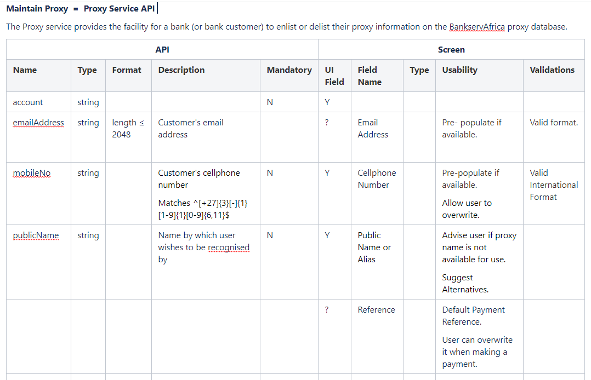
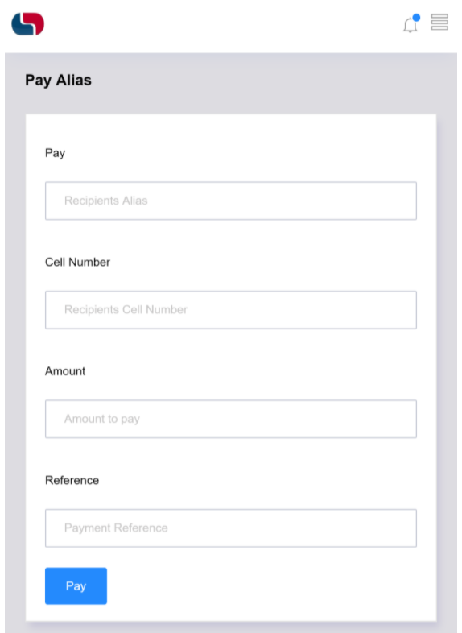
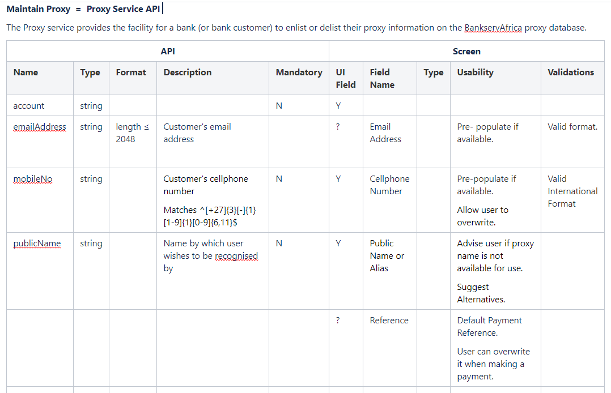
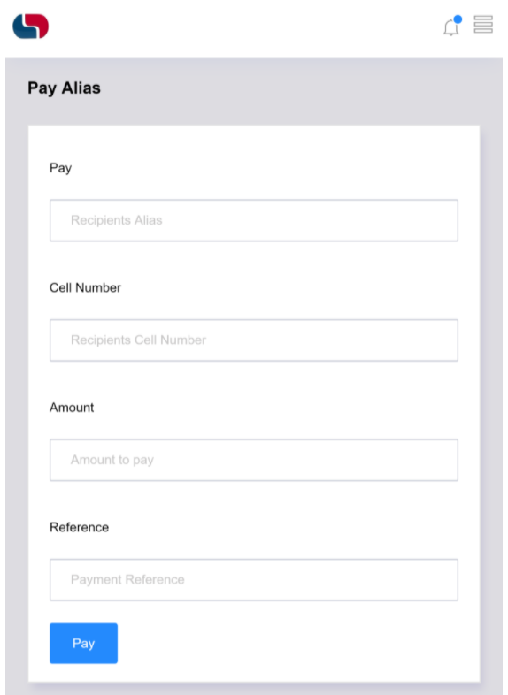

About Us
TLKC Consulting partners with businesses to achieve their most critical objectives through technology, process optimization, and human-centered design. We specialize in improving customer experiences, driving operational excellence, and aligning digital initiatives with measurable business outcomes.
Projects

Carnival.com Revamp
A transformation project enhancing user experience and conversion across the Carnival Cruise Line website. TLKC Consulting provided UX research, design validation, and interface optimization insights.
Liberty Corporate Single Service Platform
An enterprise initiative to unify customer experience and drive digital adoption. TLKC Consulting led product analysis, UX, stakeholder alignment, and digital enablement efforts.
Contact Us
If you'd like to discuss a project or learn more about how TLKC Consulting can help your business, please email us with details of what you require.
Contact Us


 


